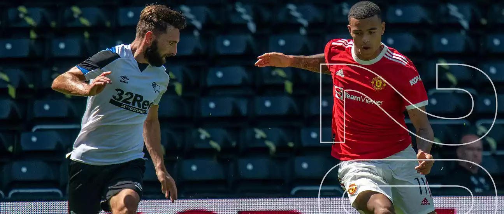

НОВОСТИ
МАГАЗИН
ИГРОКИ
ИСТОРИЯ
MUTV
КОНТАКТЫ
Манчестер
+
22°
C
BREAKING!
Главный тренер «Манчестер Юнайтед» Оле Гуннар Сульшер подписал новый контракт с клубом, сообщает официальный сайт красных дьяволов. По новому соглашению Оле Гуннар останется в клубе как минимум до 2024 года с возможностью продления контракта еще на один год.
Следующая игра через:
Дней
Часов
Минут
Секунд
😈
🏃
🏆
ПЕРВЫЙ ДЕНЬ НА ТРЕНИРОВОЧНОЙ БАЗЕ ЮНАЙТЕД
Подопечные Манчестер Юнайтед впервые провели полный день на сборах команды в Суррее.
ОЛЕ ПРЕДОСТАВЛЯЕТ ОБНОВЛЕННУЮ ИНФОРМАЦИЮ О СИТУАЦИИ С РЭШФОРДОМ
Менеджер Оле Гуннар Сульшер подчеркнул, что еще не принято решение о необходимости операции Маркусу Рашфорду.
ПОДТВЕРЖДЕНО: СОСТАВ ЮНАЙТЕД НА СБОРАХ
Манчестер Юнайтед проведет сбор из 27 человек на сборах на этой неделе в Суррее.
ОЛЕ РАССКАЗАЛ О ПЛАНАХ БОМБАРДИРА ПЕЛЛИСТРИ
Сульшер сообщил, что Факундо Пеллистри отправится в аренду, чтобы продолжить свое развитие в этом сезоне.
ОЛЕ: ДЖЕССИ ХОЧЕТ БОРОТЬСЯ ЗА СВОЕ МЕСТО
Уле Гуннар Сульшер хочет видеть больше «настоящего» Джесси Лингарда с атакующим полузащитником Манчестер Юнайтед
СУЛЬШЕР РЕАГИРУЕТ НА ПРЕДСЕЗОННУЮ ПОБЕДУ НАД ДЕРБИ
Манчестер Юнайтед получил положительное начало предсезонной подготовки с победы над Дерби Каунти.

90 in 20: Derby 1 United 2